  <section class="longread" id="fielddata">
    <div class="articlewrapper">
      <div id="title">
        <h3>AQ Chef <span>presents</span></h3>
        <h1>Car Bombs: Field Data</h1>
        <div id="sticker">OSJ Consultancy</div>
        
      </div>

      <div class="textwrapper">
        <div class="imagewrapper">
          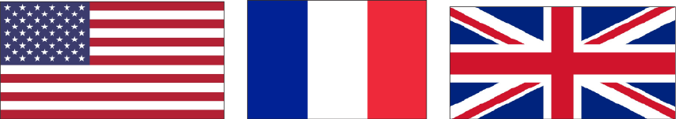
          
        </div>
        <h3>Choosing the place and time is a crucial factor to success in any operation.
          Choose targets in your own country. You know the enemy better, you are
          within. We will point out some general and specific targets as an example.</h3>

        <p>America is our first target, followed by United Kingdom, France and other crusader countries.<br><br>
          As for the field target for the car-bomb, you have places flooded with individuals, e.g. sports events in which tens of thousands attend, election campaigns, festivals and other gathering. The important thing is that you target people and not buildings.
        </p>
        <div class="imagewrapper">
          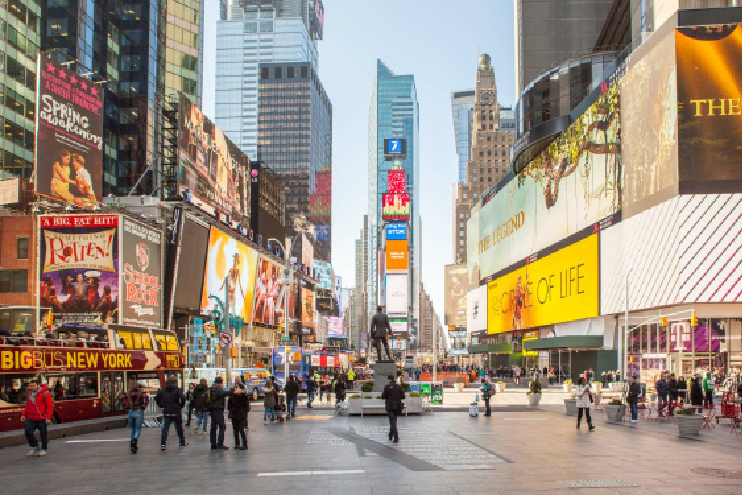
          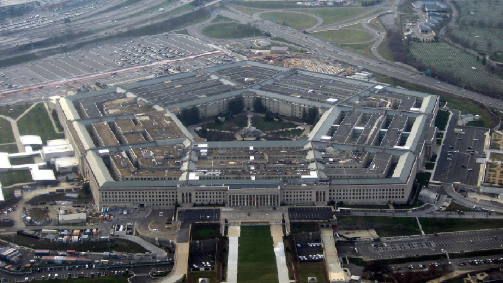
          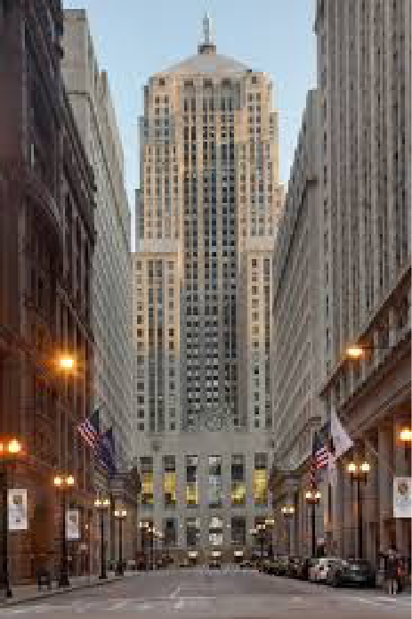
        </div>

        <h2>SPECIFIC PLACES IN THE US:</h2>
        <p>
          &bull; Washington DC and New York: Washington is the capital, and New York is the former capital. Both have symbolic importance to the American people and government. Moreover, White House is in Washington, and DC has about 347,000 federal government employees. <br><br>
          &bull; As for New York: it is known for its status as a financial,<br><br>
          cultural, transportation, and manufacturing center, it is the leading center of banking, finance and communication in<br>
          the United States. <br><br>
          &bull; Northern Virginia: It has a big military presence, almost all the military bases are based in this state, apart from the Air Force which is based in Chicago. There are federal agencies in Northern Virginia, including the headquarters of the Department of Defense and CIA; and military facilities in Hampton Roads, the site of the region&rsquo;s main seaport. <br><br>
          &bull; Chicago: It is in the mid of the US, hence it is a major transportation hub. It is an impor - tant component in global distribution, as it is the third largest inter-modal port in the world. It is also an important worldwide center of commerce. The city has the second largest financial center in the United States. Among its most important financial structures: <br><br>
           1. Sears Tower, a 108-story skyscraper, it held the title tallest building in the world for about 25 years. <br><br>
           2. The Chicago Board of Trade Building.
        </p>
      </div>


      <div class="three_vertical_column">
        <div class="left">
          <h3>Hint:</h3>
          <p>This type of car bomb is used to kill individuals and NOT to destroy buildings. Therefore, look for a dense crowd.</p>
          <h3>Think outside the box:</h3>
          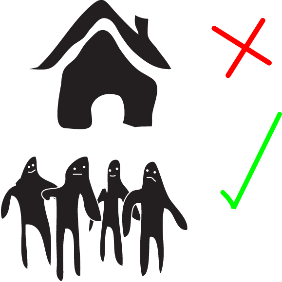
          <p>   Be creative in your Jihad. This is ‘Open Source Jihad’. Surprise the enemy, don’t follow a particular protocol. Believe me, there is no SOP for the kind of car you are riding.</p>
          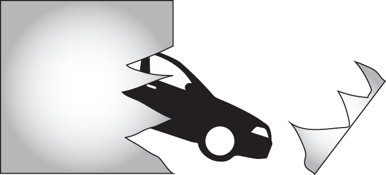
        </div><div class="middle">
          <h1>Remember</h1>
          <p><span id="getfat">Disguise yourself during the operation, appear fat (add some clothes on you), change your complexion, be a ‘clone’, use any mask (believe me embarrassment is the last thing you will think about), wear a mask suitable for the festival, white beards on 25th Dec. All in all, be creative brother. The most important part to hide is your eyes and around. </span></p>
          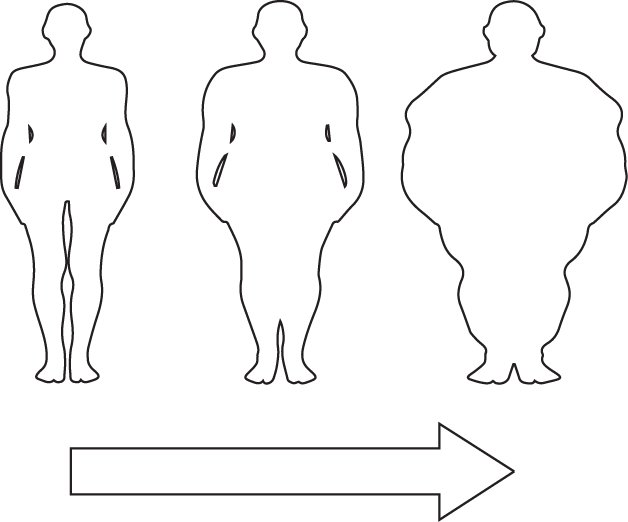
        </div><div class="right">
          <h3>Did you know?</h3>
          <p><span id="getsmaller">France’s enmity towards Islam is no secret. It does not even use pretexts to invade Muslims. What happens in Central African Republic is enough evidence. It invaded the country to help the Christian militia fight the regime Army for its relation to Islam</span></p>
          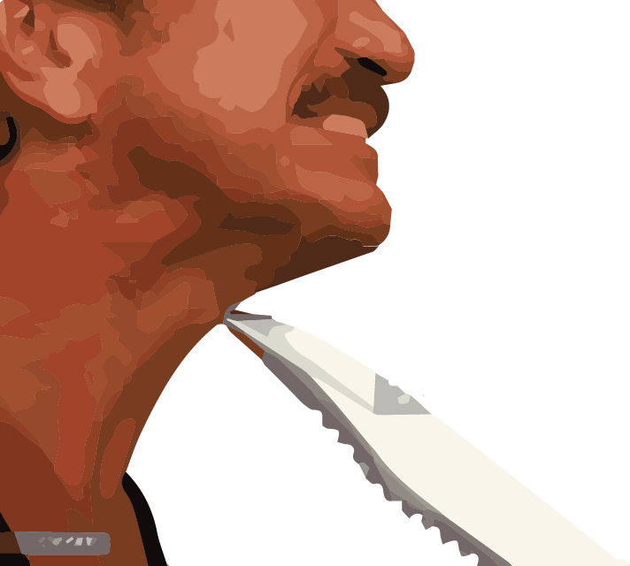
        </div>

      </div>

      <div class="textwrapper">
        <div class="imagewrapper">
          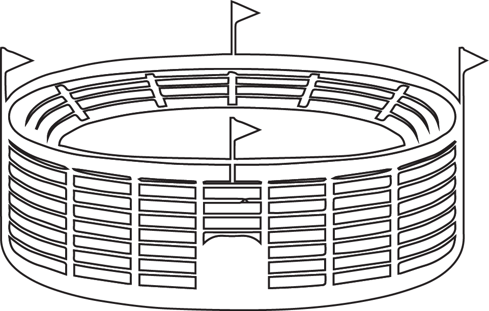
          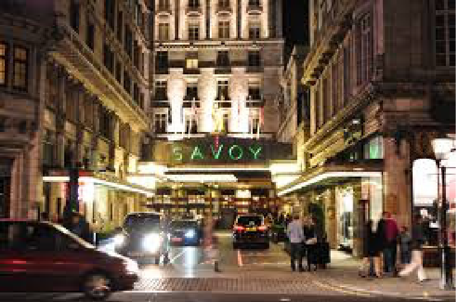
        </div>
        <h2>SPECIFIC TARGETS IN THE UNITED KINGDOM:</h2>
        <p>
          <p>There are many times and places to be targeted. <br><br>
            &bull; You have the soccer (football) stadiums especially during Premier League and FA Cup matches. They have worldwide life media coverage. The best time is after the final whistle, when huge crowds leave the stadium and celebrate around the entrances.<br><br>
            &bull; In the beginning of summer, we have Cheltenham, and the end of summer we have Epsom, whereby horse races are attended by thousands from around the kingdom including the Queen.<br><br>
            &bull; There are also Tennis tournaments.<br><br>
            &bull; It is worth to mention a more specific target, Savoy Hotel located on the Strand in central London. At about 10 pm GMT, businessmen and high profile targets leave the hotel. This is a perfect place and time to detonate your car bomb..</p>
        </p>


        <div class="imagewrapper">
          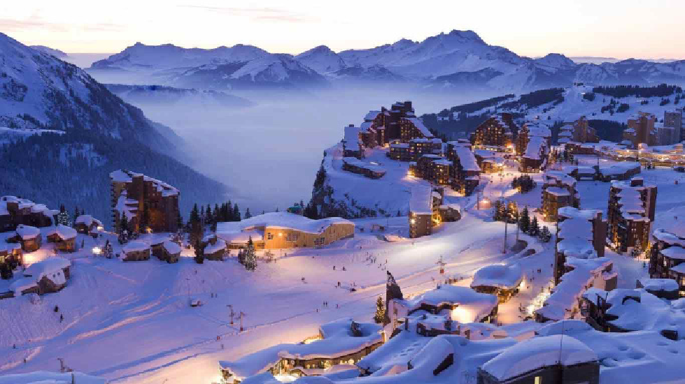
          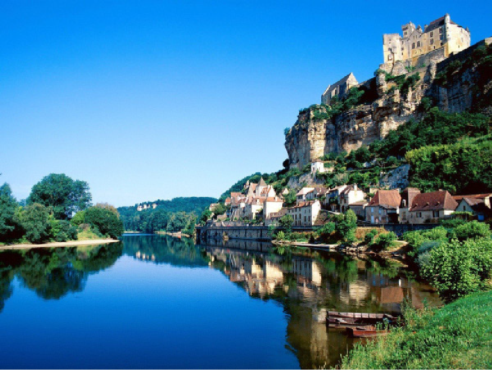
        </div>
        <h2>SPECIFIC TARGETS IN FRANCE:</h2>
        <p>
          <p>&bull; With over 82 million foreign tourists per annum, France is ranked as the first tourist destination in the world, beaches and seaside resorts, ski resorts, and rural regions that many enjoy for their beauty and tranquility (green tourism). <br><br>
          &bull; The Transport express r&eacute;gional (TER)&rsquo;s stations. Rush hours will always do.<br><br>
          &bull; The Dordogne valley, during summers. Hit two birds with one stone; both the English and the French. <br><br>
          &bull; The Coupe de la Ligue; only open to professional clubs. Expect huge <br><br>
          &bull; Crowds of supporters outside the entrances.<br><br>
          &bull; The Bastille Day Military Parade: the morning of 14th July each year in Paris<br><br>
          &bull; During special exhibition in the Mus&eacute;e du Louvre: the most visited art museum in the world and a historic monument.<br><br>
          &bull; The French Riviera.</p>
        </p>
      </div>
      <div id="footer">
        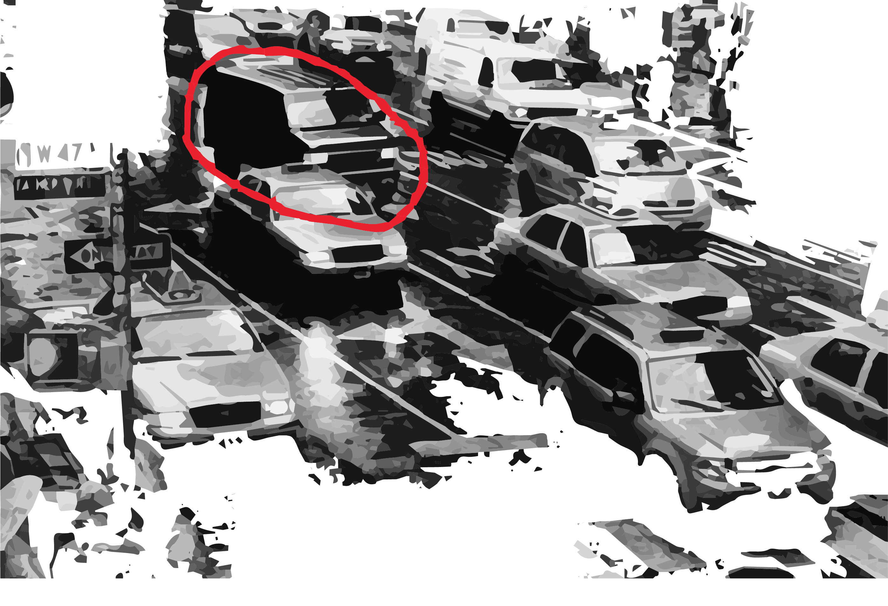
        <h1>the right man in the right place devastates the enemy<br><span class="italic">Choose Wisely</span><h1/>
      </div>
    </div>
  </section>